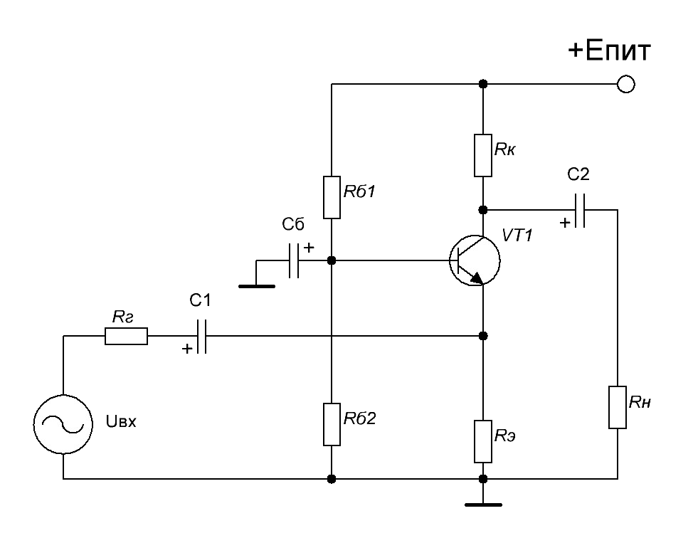

Результаты расчета:
Сопротивление базы Rб1:
Сопротивление базы Rб2:
Сопротивление коллектора Rк:
Сопротивление эмиттера Rэ:
Рекомендуемая емкость конденсаторов С1 и C2,
а так же емкость конденсатора базы Cб не менее: